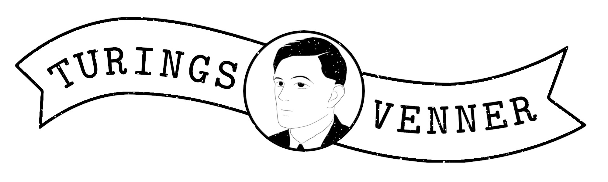

Turings Venner

Department of Computer Science, Aarhus University
Subscribe to
our mailing list
to be notified of upcoming talks!

Department of Computer Science, Aarhus UniversityIn my daily work, I adopt the mindset of an attacker to identify and exploit vulnerabilities in infrastructure. Over the last few months, AI has moved from a buzzword to a tool that fundamentally shifts how we execute these breaches. Actively reshaping the threat models of individuals, corporations, and nation-states.
In this talk, we’ll peel back the curtain on modern hacking techniques that leverage AI to scale and evolve, while acknowledging the fundamental principles of exploitation that remain unchanged. We will explore the current capabilities of AI in the offensive space, its inherent limitations, and the high-stakes future of the "automated" arms race. Being a true computer scientist isn't just about utilizing powerful software—it's about understanding the underlying systems deeply enough to know exactly how, why, and where to apply that power.
Security by design is a celebrated slogan that has been embraced by computer security practitioners. In this talk we will dive into the origins of this slogan in the 1970s, the implications for practitioners that face evolving threats, when systems that have been secure by design using decade-old criteria turn out to have insufficient protection. We will look into why formal methods are important for reasoning about negative properties (which security is) and how programming languages in particular can help enforce security properties, with concrete examples of mitigating traffic analysis. Finally, we will discuss the relevance of the slogan in the era of largely untrusted code.
When collaborating on a codebase where several people are working in
parallel on different development branches, it often happens
that different developers try to edit the same piece of code, which
leads to problems when both branches have to be merged into the
main codebase.
If git is used to collaborate on the codebase, the first developer to
merge the branch has an easy day, and the other developer is met
with a merge conflict, which is the technical term used when git was
unable to automatically integrate the two sets of changes together.
In this talk, we present a way of thinking about codebase changes
that lets us handle merge conflicts in a novel way that is much less
of a hair-pulling frustrating experience. By using this new way of
thinking, we then develop a new mechanical way to work with branches
that makes it easy to split off "refactoring work" from "feature
work", such that refactors can be merged early, thus reducing the
incidence of merge conflicts.
Relational databases organise data into tables, which work well for structured and
predictable information. But as data becomes more connected and complex, this model
starts to show its limits. Knowledge graphs offer an alternative: they represent data as
entities and relationships, making it easier to link, query, and reason about
information across different domains.
This talk introduces the basics of knowledge graphs and how they differ from relational
databases. It also explores current challenges in making knowledge graphs reliable and
robust. By the end, you’ll understand how knowledge graphs “connect the dots” in ways
that traditional databases can’t, and what it takes to make them dependable in real
applications.
Secure Multi-Party Computation (MPC) enables secret-holders to compute joint functions of their secrets, without revealing anything about their secrets to one another – or to anyone else – apart from the function outputs. Zero-Knowledge Proofs (ZKP) are another tool from the cryptography toolbox; they enable secret-holders to prove statements involving their secrets, without revealing anything about the secrets. ZKP can be used as a building block for MPC – and vice versa! This talk will delve into that relationship.
Computing has fundamentally changed how we interact with digital data. Computational tools let us quickly edit photos with filters, design digital 3D models, and share them with colleagues and friends all over the world. However, these fluid capabilities remain largely confined to virtual spaces, leaving physical objects costly and time-consuming to modify. For example, changing a digital car’s color is very easy and quick, but repainting a car in the real world will come at high costs and long waiting times in a paint shop. In this talk, I will showcase my research advances to enable a world where we can create and modify physical matter as easily as we do it in the digital world. I will start with showing our advances on high-resolution, reprogrammable color textures on physical objects that enables designers and end-users to change the visual appearance of objects in just a few minutes. I also highlight our work on reprogrammable fingernails blending fashion and technology for dynamic self-expression. Next, I will show how computing can transform large-scale objects such as furniture or even entire rooms with soft sensors and displays. Finally, I’ll reveal our progress on integrating computing into the oral cavity through smart dental devices, paving the way for real-time health monitoring and subtle interactions.
One of the big shocks of 20th century mathematics was that undecidable problems (those
which cannot be checked by a computer) are plentiful and natural. Most famously, the
undecidability of the halting problem tells us that there is no algorithm for checking
whether a program halts.
In this talk, we focus the opposite: problems which seem entirely undecidable but which
are actually computable. In so doing, we'll discuss 'higher-type' computability theory
which studies programs with types more complex than ℕ → ℕ and, in particular, we'll
explore Martín Escardó's series of results showing that certain function types A → B can
be checked for equality.
Quantum computing promises speedup in solving computationally hard and classically
intractable problems. Logical formulations of such problems are compiled to enable
execution on quantum processors. While several competing platforms exist, they all come
with different strengths and weaknesses. Circuit optimization in the compilation
pipeline helps mitigate some of the weaknesses for practical quantum computing.
Industrial compilers like Qiskit by IBM, TKET by Quantinuum mainly use fast heuristic
approaches for circuit optimization. However, most of these problems are NP-complete so
one needs extensive search methods for better results.
Over the past few years, we have been looking at encoding various optimization problems
in to SAT and using domain independent industrial solvers. In this talk, I will briefly
discuss some of the problems we solved. The main focus is on the layout synthesis of
quantum circuits and some other relevant results.
Humans naturally communicate through multiple sensory channels, so it’s no
surprise that many of our interactions with digital devices are also
multimodal. A multimodal interface combines various sensory modalities - such
as visual, auditory, and haptic (touch and gesture) - to enable more natural and
flexible communication between humans and computers. These interfaces are
common in devices like smartphones, tablets, and other mobile technologies.
The key strength of multimodal interfaces is their adaptability. They allow
users to choose the most suitable input or output method and seamlessly switch
between modalities based on their physical context or the task at hand.
In this talk, I will explain what multimodal interaction is, why it’s
important, and how it works in practice. I’ll explore real-world applications,
including collaboration systems and autonomous vehicles, to highlight how
multimodal interaction is shaping the way we engage with technology.
In this talk, I will present a new data structure called Pure Binary Finger
Search Trees, which combines the benefits of red-black trees and
doubly-linked lists. Like a red-black tree, it supports efficient O(lg n)
insertions and deletions while maintaining balance. However, it also allows
for efficient amortized O(1) updates when working with a "finger", i.e. a
reference to a specific node, much like in a doubly-linked list. Further it
supports efficient finger searches from any node in the tree, where the
search time is only dependent on the distance in the underlying order of the
nodes.
These operations are obtained without any extra information in the nodes
apart from the key and two pointers, much like a doubly-linked list. This is
achieved by cleverly encoding extra information within the tree’s structure.
I will explain the design of this data structure, its key operations, and
how it offers an elegant solution for dynamic, efficient data management.
What does 'x' do? In more words, what does accessing a variable in a programming language entail? In this talk, we will peel the many layers underpinning modern programming, from the effect of the compiler optimisations down to the pipelining deep down in the hardware, and touch upon the key components that make 'x' much more complex than it seems.
Cryptography is at the heart of security on today's internet. It ensures
your messages are only readable by the intended recipient and you are not
communicating with an impostor. Yet for the past few years, it has become
increasingly clear, that a large enough quantum computer can break almost
all the cryptography that we use today. Even though there are still many
years until this would turn into a real problem, we have to begin addressing
it now. Luckily for us, we are actively working on new cryptographic methods
that are safe even in a post-quantum world of computation.
In this talk, we will dive into what a quantum computer is, how it can break
some methods of cryptography, and finally see an example of post-quantum
cryptography.
What are you when you are attending a hybrid meeting remotely? A person? A
video feed? Or something else entirely? Since the beginning of the internet,
researchers have tried to bridge locations, showing real-time feeds of
workspaces, faces and audio. At some point things got weird, and a perfect
solution is still not in sight.
In this talk we present some of the funky and sometimes uncanny research in
hybrid communication, and how our work with telepresence-robots highlights
biases in the existing research.
The Anatree (Anagram Tree) allows one to solve
constraint satisfaction problems where the order of the
symbols in each input word does not matter. What makes
it unique is that the complexity of each operation on
this data structure only depends on the number of
symbols in the alphabet and the length of each word
rather than the total number of words being processed.
I want to show the fundamental design of the Anatree,
the basic recursive operations on it, and finally show
how it is used in practice on a project of mine.